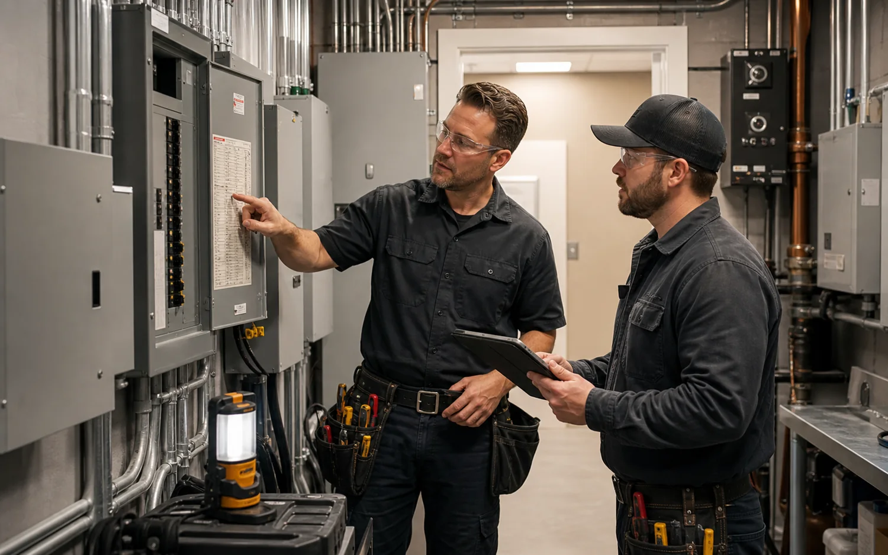
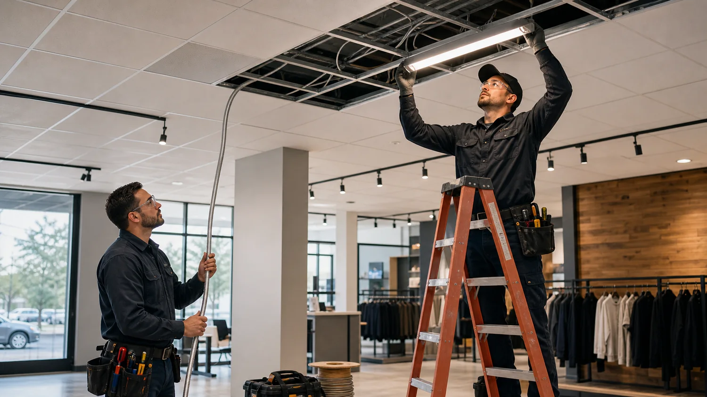

Access and shutdown planning
The request captures tenant hours, keys, panel room access, ceiling height, lift needs, noise limits, and whether circuits can be shut down during business hours.
Commercial service requests need practical context: operating hours, tenant access, panel locations, ceiling height, equipment loads, inspection deadlines, and whether work must happen outside business hours. VoltWise structures those details before provider follow-up.

Commercial work often touches staff, customers, inventory, security systems, and scheduled inspections. The service group separates troubleshooting, lighting, equipment circuits, maintenance, and build-out support so the provider can plan access and shutdown windows.

A lighting retrofit, panel repair, or new equipment circuit can affect store hours, tenant boundaries, fire-life-safety systems, and inspection schedules. The request should include building type, ceiling access, panel room photos, load information, and available work windows.
Commercial providers often need ceiling access, panel schedules, tenant boundaries, lift requirements, shutdown windows, equipment nameplate information, and manager approval before work starts. Lighting and conduit work may require staged areas so staff, customers, refrigeration, security, and checkout systems are not disrupted unnecessarily.

The exact method depends on the building, equipment, local code, and provider judgment, but these are the practical checkpoints that make the request clearer.
The request captures tenant hours, keys, panel room access, ceiling height, lift needs, noise limits, and whether circuits can be shut down during business hours.
Providers may trace unknown circuits, verify panel schedules, separate shared loads, test controls, and document which equipment or tenant area is affected.
Commercial execution may include conduit bending, raceway mounting, box placement, support spacing, fixture mounting, listed fittings, breaker installation, and coordination around inspections.
Closeout often includes changed circuits, panel labels, parts replaced, recommended follow-up, permit or inspection status, and access issues for future work.
Electrical requirements vary by jurisdiction and property type. These pages describe common coordination needs; the independent provider confirms the enforceable requirements for the actual site.
Photos, symptoms, panel access, service group, timing, and property type help the first provider call become more useful.